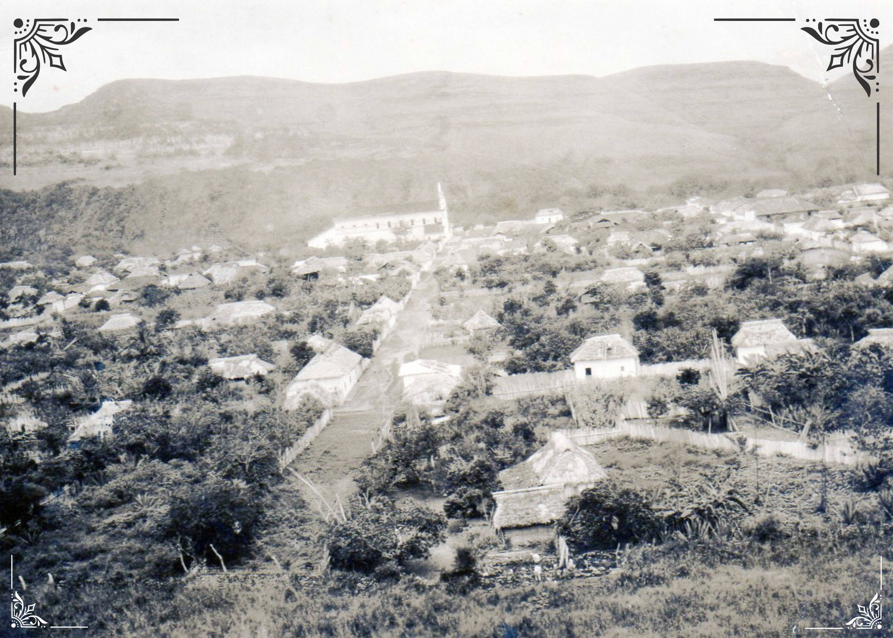

La Jagua originalmente era una comunidad indígena Tama, situada al borde de la desembocadura del río Suaza en el río Magdalena. Se cree, por su ubicación y los restos arqueológicos que se han encontrado, que La Jagua fue un lugar de importancia ceremonial y adoratorio de antiguos dioses para distintos pueblos indígenas como los Andaquí, Tamas, Yalcón, Timanaes, Pijaos y Nasa. La Jagua no tiene fecha de fundación española, pero se cree que ocurrió en el año 1540, cuando se construyó la primera capilla doctrinera, por lo que es uno de los pueblos más antiguos del Huila. Fue la primera sede del actual municipio de Garzón y se disputa hoy con Popayán la cuna del sabio Francisco José de Caldas; aún se conserva la casa que, según la tradición, fue su lugar de nacimiento. En alguna oportunidad fue erigido como municipio, pero siempre fue materia de rivalidades y de disputas por parte de Garzón y Altamira, poblaciones que en varias ocasiones entraron en conflicto por la anexión de su extenso territorio. Desde 1936, por ordenanza departamental, es inspección de policía, adscrita al municipio de Garzón.
 Volver Página Principal